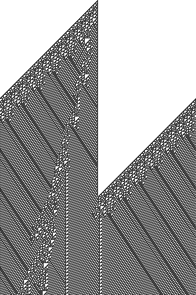
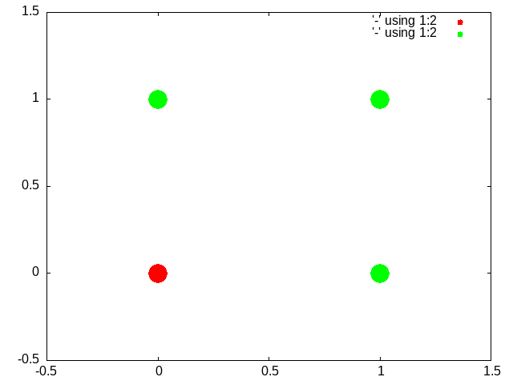
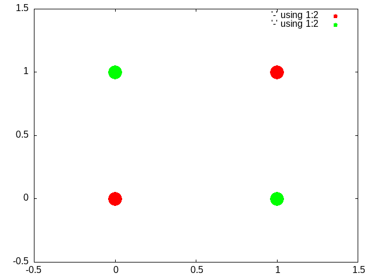

Introduction to Linear Algebra and Neural Networks
1. Introduction
1.1. Goals
Our goal for the next few lessons is to come to understand
- What is a neural network?
- What mathematics are needed to build a neural network?
- How can neural networks help us understand cognition?
As a first illustration of some of the key ideas we will execute a simple cellular automata rule.
1.2. Be the Neuron
For this exercise you will need a sheet of graph paper and a rule.
Think of this rule as a mathematical function: a matching of each possible input to one possible output. You are going to consider a particular grid cell of the graph papers as a metaphorical neuron. That "neuron" decides whether or not to "fire" (in this case firing is to be colored in black and not firing to be left white). Your rule specifies what the output is for that neuron/grid-cell as a function of it's three inputs: the neighbor to the left, itself, and the neighbor to the right. We view the passage of time as flowing down, so you color in the neuron's state below it.

Figure 1: Automata as a 1D grid with neighbors. For this example the neuron is grid cell "2". You decide whether to color the grid cell below (visualized as the neuron one moment in time later) based on the value of the neighbor to your left, itself, and the neigbhbor to the right. Implement your assigned rule on the piece of graph paper to see what pattern emerges.
1.3. What are the lessons learned?
- Repetitive actions are hard. We (humans) make mistakes following even simple rules for a large number of repeated steps. Better to let the computer do it since that is where its strengths lie.
- Complex global patterns can emerge from local actions. Each neuron is only responding to its immediate right and left yet global structures emerge.
- These characteristics seem similar to brain activity. Each neuron in the brain is just one of many. Whether a neuron spikes or not is a consequence of its own state and its inputs (like the neighbors in the grid example).
- From each neuron making a local computation, global patterns of complex activity can emerge.
- Maybe by programming something similar to this system we can get insights into brain activity.
1.4. Programmatic implementation
To demonstrate how one might take the ideas that we practiced when implementing a cellular automata phycially programmatically, I have coded some of the steps for a visualization in common lisp and show the code here. Because things don't always run so cleanly when breaking the code into snippets inside an orgmode file and using emacs, if you decide to adapt or test this code you should use the cellular-automata.lisp.
(defun rule0 (ns) (match ns ('('w 'w 'w) 'w) ('('w 'w 'b) 'w) ('('w 'b 'w) 'w) ('('b 'w 'w) 'w) ('('w 'b 'b) 'w) ('('b 'w 'b) 'w) ('('b 'b 'w) 'w) ('('b 'b 'b) 'w)))
The above code snippet shows us how we can view the instructions of what to color as a function that takes input and gives us a unique output. We have three cells to consider, and they can each be one of two values. That means there are \(2\times2\times2\) or \(8\) cases our rule has to cover. For each of those 8 cases the output can be either of two values so we have \(2^8\) possible rules (though you might think that we only have half that many since all white or all black is pretty much the same thing).
We can view each rule as a mapping from one binary number to a 0 or 1. If 'w' is considered a zero then the input "w w w" is 0 0 0. The use of binary numbers gives us a natural order. If we apply the same mapping of w → 0 and b → 1 then then each rule can also be seen as a binary number and exists in a fixed order. We can translate that binary number to our usual base 10 number. For example, when we map each input to w we get the binary number 00000000 and this is 0 in base 10; "00011110" is 30 1. You can also go the other way and convert the number in base 10 representation to a binary list. It may be a bit tedious to figure out the details, but once you do the computer can make the translation over and over without mistake.
That way we don't have to manually write 256 rules like this:
(defun rule110 (ns) (match ns ('('w 'w 'w) 'w) ('('w 'w 'b) 'b) ('('w 'b 'w) 'b) ('('b 'w 'w) 'w) ('('w 'b 'b) 'b) ('('b 'w 'b) 'b) ('('b 'b 'w) 'b) ('('b 'b 'b) 'w)))
(defun make-rule (rule-no) (flet ((white-or-black? (in-char) (if (string= in-char #\0) 'w 'b))) (let ((test-char (reverse (str:pad 8 (write-to-string rule-no :base 2) :pad-char "0" :pad-side :left)))) (lambda (ns) (match ns ('(w w w) (white-or-black? (elt test-char 0))) ('(w w b) (white-or-black? (elt test-char 1))) ('(w b w) (white-or-black? (elt test-char 2))) ('(w b b) (white-or-black? (elt test-char 3))) ('(b w w) (white-or-black? (elt test-char 4))) ('(b w b) (white-or-black? (elt test-char 5))) ('(b b w) (white-or-black? (elt test-char 6))) ('(b b b) (white-or-black? (elt test-char 7))))))))
(defparameter r110 (make-rule 110)) (funcall r110 '('b 'w 'b))
(defun top-row (n) (multiple-value-bind (how-many-start how-many-end) (if (evenp n) (values (- (/ n 2) 1) (/ n 2)) (values (/ (- n 1) 2) (/ (- n 1) 2))) (append (make-list how-many-start :initial-element 'w) (cons 'b nil) (make-list how-many-end :initial-element 'w)))) (defun pad-front (in-list) (cons (elt in-list (- (length in-list) 1)) (subseq in-list 0 2))) (defun pad-end (in-list) (append (subseq in-list (- (length in-list) 2) (length in-list)) (list (first in-list)))) (defun crawl-cols (which-rule in-list) (do* ((next-row (list (funcall which-rule (pad-front in-list)))) (when-to-quit (length in-list)) (start 0 (+ 1 start)) (stop 3 (+ 1 stop)) (patt (funcall which-rule (subseq in-list start stop)) (funcall which-rule (subseq in-list start stop)))) ((= stop when-to-quit) (nreverse (append (list (funcall which-rule (pad-end in-list)) patt) next-row))) (push patt next-row))) (defun build-rows (which-rule &key (ncols 200) (nrows 200)) (let ((lol (list (top-row ncols)))) (dotimes (rs (- nrows 1) (nreverse lol)) (push (crawl-cols which-rule (elt lol 0)) lol) )))
(defun rule-num-to-png (rule-num file-name &key (xsize 200) (ysize 200)) (let* ((which-rule (make-rule rule-num)) (rule-dat (build-rows which-rule :ncols xsize :nrows ysize)) (pic (make-instance 'png :width xsize :height ysize :color-type :grayscale)) (image-data (data-array pic))) (dotimes (ri (length rule-dat) (write-png pic file-name)) (let ((cur-row (elt rule-dat ri))) (dotimes (ci (length cur-row)) (setf (aref image-data ri ci 0) (if (equal (elt cur-row ci) 'w) 255 0)))))))
(rule-num-to-png 110 "r110.png" :xsize 400 :ysize 600)

1.5. The activity class_exercise
- We need to have something to start with. Put a black square in the center middle of your graph paper. 2 You need to do this, because I will call on a random subset of you to exhibit your pattern.
- Send in the chat the number for the rule you are going to follow. You can pick any rule you want except for 0 or 110, or the number that anyone before you has already selected.
- Follow your rule and work across and down coloring each row based on the update of the cell above it.
- Do enough rows to get a sense of the pattern, and then message in the chat that you are done.
- Save your image. If it is a piece of paper take a picture of it. If it is a spreadsheet take a screen grab. You will have to submit that to the dropbox on learn for credit for today's activity.
- A homework for this activity will be to reproduce your rule as a bit of computer code. You will use any programming language (other than lisp) to write a function like the one I have written for outputting the color of a square based on the input of its neighbors.
NB. For the class in Winter 2022 I decided not to make this a homework.
1.6. Cellular Automata
As mentioned above, cellular automata demonstrate some basic lessons that we will make use of when thinking about neural networks. One of these points is that there may be simpler representations for complex descriptions. If we can find the right language to translate them into we may get concision and repeatability as by-products. This is demonstrated by the naming convention for the rules of cellular automata: SEP: The 256 Rules
In emphasizing that local decisions can produce interesting global effects it may be interesting to examine other similar uses of the cellular automata idea. One famous and visually pleasing one is the Game of Life.
The analogy of automata to simple neurons may be deeper than at first it appears. Some very famous thinkers connected the two. One of the most brilliant people of all time, John von Neumann, was working on a book about automata and the brain at the time of his death. I have linked to a commentary in case you are interested in reading further (Claude Shannon (pdf)) as well as to a pdf copy of the book: The Computer and the Brain
A contemporary mathematician and the inventor of the Mathematica software system also believes that cellular automata may be a theory of everything. See what Stephen Wolfram thinks.
2. What Math Underlies Neural Networks?
2.1. Linear Algebra
The math at the heart of neural networks and their computer implementation is linear algebra. For us, the section of linear algebra we are going to need is mostly limited to vectors, matrices and how to add and multiply them.
2.1.1. Some of the Objects and Operations we will need (terminology to learn).
- Vectors
- Matrices
- Scalars
- Addition
- Multiplication (scalar and matrix)
- Transposition
- Inverse
2.1.2. Adding Matrices class_exercise
To gain some hands on familiarity with the manipulation of matrices and vectors we will try to do by hand and in simple programs some of the fundamental operations of addition and multiplication. We will also thereby learn that some of the rules we learned for numbers (such as a * b = b * a) do not always apply in other mathematical realms.
Two ways to think about what a vector is:
- It is an object (arrow) with magnitude and direction
- It is a (by convention) column of numbers
For different purposes one or the other definition may prove more convenient.
A matrix can be considered as a collection of vectors or, in our case, as a rectangular (2-D) collection of numbers.
- Activity
Using your preferred programming language figure out how to construct an array/matrix.
Make two arrays and make them the same size (what is the size of a matrix?).
Add them together in both orders (A + B and B + A). How does one add an array that itself has numerous different numbers?
Then do the same for multiplication. Note that there are particular requirements for the sizes of matrices in order from the to be able to be multiplied one versus another and very strict requirements for being able to be multiplied in both directions.
What is the name for the operation when A*B = B*A?
To get you started here are many different ways to create array in python and R.
2.1.3. Common Notational Conventions for Vectors and Matrices
Vectors tend to be notated as lower case letters, often in bold, such as \(\mathbf{a}\). They are also occasionally represented with little arrows on top such as \(\overrightarrow{\textbf{a}}\).
Matrices tend to be notated as upper case letters, typically in bold, such as \(\mathbf{M}\).
Good things to know: what is an inner product? How do you compute it in your preferred programming language?
2.1.4. Homework
Submit a simple program that accepts two matrices, checks if they are of compatible sizes, and then computes their inner product.
3. What is a Neural Network?
What is a Neural Network? It is a brain inspired computational approach in which "neurons" compute functions of their inputs and pass on a weighted proportion to the next neuron in the chain.

3.1. Non-linearities
The spiking of a neuron is non-linear. You saw this in both the integrate and fire and Hodgkin and Huxley models you programmed. The lines on those plots your created are not, for the most part, straight. Perhaps the simplest way to incorporate a non-linearity into our artificial neuron is to give it a threshold, like we did for the integrate and fire model. When activity exceeds the threshold (which we will usually designate with a capital Greek Theta \(\Theta\)) then the neuron is set to 1 and if it is not firing it is set to 0 (like the "w" → 0; "b" → 1 mapping we used for the cellular automata).
\begin{equation} \label{orge3ccb2e} \mbox{if } I_1 \times w_{1,1} + I_2 \times w_{2,1} + I_3 \times w_{3,1} > \Theta \mbox{ then } Output = 1 \end{equation}What this equation shows is that Inputs (the \(I\) s) are passed to a neuron. Those inputs have something like a synapse. That is designated by the w's. Those weights are how tightly the input and internal activity of our artificial neuron is coupled. The reason for all the subscripts is to try and help you see the similarity between this equation and the inner product and matrix multiplication rules you just worked on programming. The activity of the neuron is a sort of internal state, and then based on the comparison of that activity to the threshold you can envision the neuron spiking or not, meaning it has value 1 or 0. Mathematically, the weighted sum is fed into a threshold function that compares the value to a threshold (\(\Theta\)), and passes on the value 1 if it is greater than the threshold and 0 (sometimes \(-1\) rather than zero is chosen for the inactive state because there are certain computational conveniences in doing so).
3.2. Questions:
- What, geometrically speaking, is a plane?
- What is a hyperplane?
- What is linearly separability and how does that relate to planes and hyperplanes?
3.3. Examples of Boolean Functions and How They Map onto our Neural Network Intuitions
3.3.1. AND

Figure 2: The "and" is true when both inputs, and only when both inputs, are true.

Figure 3: The "or" is true unless both inputs are false.
3.3.2. XOR

Figure 4: The "xor" is true when one or the other, but not both of the inputs are true. It is exclusively an or function
3.3.3. Optional Reading
This short article provides a nice example of linear separability and some basics of what a neural network is.
{kind=link}
4. Connections
Can neural networks encode logic? Is the processing zeros and ones enough to capture the richness of human intellectual activity?
In fact there is a long tradition of representing human thought as the consequence of some sort of calculation of two values (true or false). If you have two values you can swap out 1's and 0's for the true and false in your calculation. They even seem to obey similar laws. If you the conjunction (AND) of two true things it is only true when both are true. If you take T = 1, then T ∧ T is the same as \(1~\times~1\).
In the next section we will build up a simple threshold neural unit and try to calculate some of these truth functions with our neuron. We will build simple neurons for truth tables (like those that follow), and string them together into an argument. Then we can feed values of T and F into our network and let it calculate the XOR problem.
4.1. Boolean Logic
- George Boole, Author of the Laws of Thought
- Read the book on Archive.org
- Read about George Boole.
4.2. First Order Logic - Truth Tables
Or
Table 1: Or Pr A Pr B Or 0 0 0 0 1 1 1 0 1 1 1 1 And
Table 2: And Pr A Pr B Or 0 0 0 0 1 0 1 0 0 1 1 1
Nand
Table 3: Nand Pr A Pr B Or 0 0 1 0 1 0 1 0 0 1 1 0